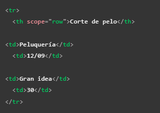
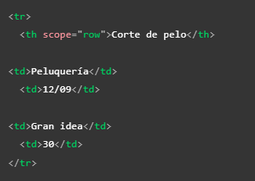

Tablas
Table
Esta se trata del la etiqueta contenedora de la tabla en si, marca su inicio y final, todos los elemtos de esta se deben incluir en su interior
Una recomendación a la hora de crear tablas es incluir una etiqueta "captión" en su interior, esta actua como el titulo de la tabla, es veneficioso para que los usuarios puedan reconocer el contenido de la paguina rapidamente, esto incluye a los ususarios con porblemas visuales que utilisen motores de leectura, por ello es que se recomienda que el titulo sea una descripción del contenido y que se coloque este elemto directamente debajo de la etiqueta "table" (fuera de la estructura de las celdas)
Td
Este elemto define las celdas de la tabla, dentro de esta etiqueta se encuentra el contenido de la misma, ya sea otros elemtos HTML o algun texto, un aspecto positivo de las tablas es que cualquier otro elemento puede ser alvergado en sus celdas, una caracteristica de las celdas es que por defecto cada celda nueva se ubicara a la derecha de la anterior en la misma fila
Tr
Las tablas se estructuran en base a las filas de la misma,el elemto "tr" almacena en su interior todas la celdas que pertenezcan a una misma fila, por lo tanto cada fila es un conjunto de codigo independiente de otras fila, dentro de este elemto se mantiene la caracteristicas de que las nuevas celdas que se añadan se insertaran de izquierda a derecha
Th
Este elemto define los encabezados de la tabla, basicamente funciona de la misma forma que lo hace una celda común con el extra de incluir un poco de estilos al texto que se encuentra en el interior, esto ya que se vissualiza por defecto en negritas, con el fin de resaltar los encabezados del resto de la información de la tabla, tambien incluye le atributo "scope" el cual permite mejorar la accesivilidad de la tabla, ya que vincula un encabezadocon su respectivos datos de la misma fila o columna, por lo tanto los lectores web pueden trabajar edacuadamente
Profundizando en las tablas
Colspan y Rowspan
Estos atributos se utlizan para aquellos casos en los que queramos que una celda ocupe más de una columna o más de una fila, ambos atributos trabajan con un valor numerico sin decimales, el cual es igual al número de filas o columnas que se desea que ocupe la celda, por lo tanto:
- Colspan: Define el número de columnas que una celda puede ocupar
- Rowspan: Define el número de filas que una celda puede ocupar
Nota: se pueden usar ambos atrributos a la vez sin problema alguno
Tablas y los estilos CSS
En una tabla tambien es posible incorporar los estilos y clases CSS, sin embargo hacerlo de forma tradicional no es eficiente, ya que una tabla al estar constituida por numerosos elemtos internos seria necesario definir el estilo o una clase en cada uno, para simplificar esta tarea existen los elemtos "col" y "colgroup", esto tiene la función de definir cuales elemento tendran que estilos.
Su forma de uso consiste en el elemto "colgroup" actuando de contenedor del elemto "col", por otra parte el "col" actua vinculando el estilo a una serie de celdas, "col" se define en base a la pososción que tengan las celdas en sus respectivas filas, es decir:
Para la primera celdas de las filas se utiliza un "col", para las segundas un segundo "col", otro para las terceras así sucesibamente, si en algun momento quisieramos que a alguna serie de celdas no se le aplique un estilo iagualmente es necesario incluir su respectivo elemto "col" pero dejandolo vacio para de ese modo seguir llevando la co-relativade de las celdas, ya que de lo contrario se le aplicaria los estilos de otras a estas
Un ejmplo de este es:

El resultado de este codigo es el siguiente

Nota: Se puede usar los atributos colspan y rowspan en el elemento "col" perfectamente
Si se quiera añadir el estilo a las dos tablas seria de la siguiente manera

Nota: "span tambienadopta un valor numerico sin decimales"
Nota: Si se diera el caso de querer dejar una columana vacia se puede usar el codigo de simbolo especial " ", este al ser interpretado se muestra una celda vacia
Nota: En la actualidad no es recomendable el emplear tablas para estructurar la paguina web, esta es una vieja practica que se utilizaba cuando CSS tenia mala compativilidad con los navegadores, actualmente esto es completamente contraproducenste ya que se optiene un codigo más limpio, un contenido más semantico y mejores diseños con la implentación de CSS en la paguina así como con el uso de los contenedores semanticos y no semanticos
Añadir estructura a las tablas
Depeniendo del contenido que se llegue a tratar en la paguina puede que la estructura de nuestras tablas se vuekva más compleja, para todos estos casos existen algunas etiquetas con la espesifica función de definir la estructura de la tabla de forma clara, como tal la aplicación de estas etiquetas no afectan a la accesivilidad de la tabla de ninguna manera, lo que si hacen es ayudar a producir un codigo más limpio, estructurado y entendible a la vez que facilitar la aplicación de estilos CSS en esta, las atiquetas son las siguientes:
-
Thead
Este elemento es el que define la cabecera de la tabla, en otra palabra alverga todos los encabezados de las columnas aunque en ocaciones dependiendo de la tabla se pudiesen incluir otros elementos en la cabesera
Nota: si se utilizan los elementos "col" y "colgroup" la cabecera debe de ir justo debajo
-
Tbody
Esta etiqueta es la que define cual será el cuerpo de la tabla, por lo tanto es el lugar en el que se encontrara la mayor parde del contenido, basicamente todo lo que no se encuentre en la cabesera o en el pie de tabla se encuentra en el cuerpo, en codigo, debido a la cantidad del contenido, pudiese crearce y ubicarse al ultimo (despues y por debajo de thead y tfoot) ya que siempre que este dentro de un elemto "table" se visualizara en el lugar correcto
Nota: Tbody aún si no es definido en el codigo los navegadores lo incluyen por defecto, es bueno definirlo uno mismo para tener mejor control sobre la estructura y los estilos de la tabla
-
Tfoot
Este ultimo elemto cumple con la función de definir el pie de tabla, pudiese por ejemplo tratrse de la ultima fila la cual pudiese contener datos de las filas anteriores, una caracteristica de esta etiqueta es que en codigo se puede crear antes que el cuerpo de la tabla ya que siempre que se encuentre dentro de un elemento "table" se visualizara en el lugar correcto
Nota: Un ejemplo de uso de estas etiquetas para aplicar estilos CSS seria: definir que tanto la cabecera como el pie de tabla se repitan en cada paguina que se muestre, y que el cuerpo de la tabla se muestre en una sola paguina, podiendo desplasarte por él con una barra de desplazamiento
Malas practicas
Anidar tablas: Como se ha dicho anteriormente las tablas pueden contener casi cualquier elemto dentro de estas, incluyendo otras tablas siempre y cuando estas tengan la estructura completa (table), a esto es a lo que se le conose como "anidar", sin embargo el poner una tabla dentro de otra no es una practica recomendable ya que da como resultado una estructura que puede ser dificil de entender para lo usuarios y para los motores de lectura, por lo tanto lo mejor es unicamente hacerlo en los casos que sea estrictamente necesario, ya que el el resto de los casos es probable que con "colspan" "rowspan" se obtenga mejores resultados
Buenas practicas
- Usar encabezados de columna y de fila: Esto es recomendable ya que ayuda a que los usuarios puedan interpretar de mejor forma los datos de la tabla, esto aplica incluso para los usuarios con problemas visuales, esto ya que por lo general estos utilizan motores de lectura para interactuar con la paguina, para un motor de lectura interpretar una tabla puede resultar complejo, sin embargo al incluir los encabezados el motor y por lo tanto el usuario pueden interpretar la tabla de una forma similar a como lo hacen alguien sin problemas visuales
- Elemento "caption": como ya se ha dicho anterior mente es muy recomendable icluir un titulo para la tabla, ya que ayuda al usuario a descubrir si la tabla le sera de utilidad
-
Usar el atributo "scope": Este atributo se utiliza en los elemtos "th" y le indica a los motores de lectura que encabezado pertenese a que fila o columna con el fin de que le permitan a sus usuarios leer todas las celdas del encabezado de una vez, esto lo hace atravez de dos valores: "col"(columna) y "row"(fila) como lo hacen en estos ejemplos:
 

scope tambien posee dos atributos más, "colgroup" y "rowgroup" estos valores definen aquellos casos en los que un encabezado ocupe más de una selda a la vez por lo tanto se utilizan en los casos que el encabezado avarque dos o mas columnas o filas
-
Atributos "id" y encabezados: Estos atributos tienen una función alternativa al uso del "scope" su forma de uso consiste en asignarle un id unico a cada elemto "th" por otrolado se le asigna un atributo "headers" a todos los elemtos "td", el "headers" debe de contener una lista (separada por espacios) del id de todos los elemtos que actuan como encabezado en esta celda sin importar si pertenesen a una fila o columna, de esta forma se define la posición explicita de cada celda

Nota: para que este metodo funcione adecuadamente se necesita encabezados de columna y de fila